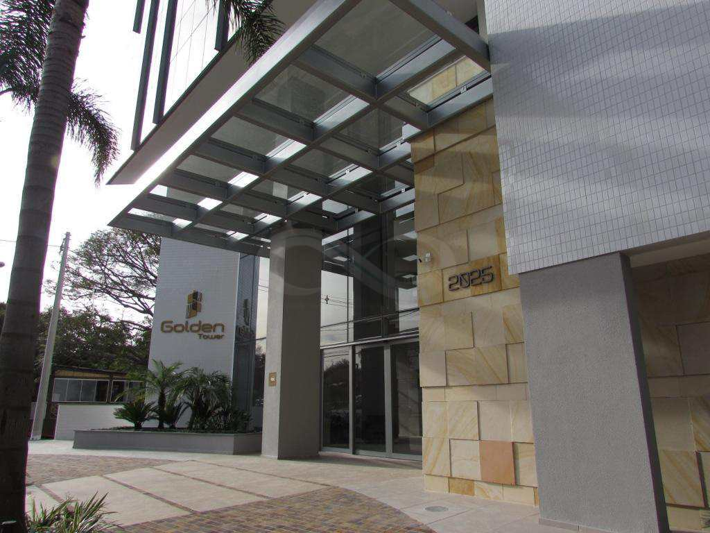

Golden Tower, Av. José Loureiro da Silva, 2025 - Centro, Gravataí - RS, 94010-000
Consultório inaugurado em 2023, situado na cidade de Gravataí.
Para saber mais sobre a área de odontologia.
link:
Conselho regional de odontologia do RS
Espaço para feedbacks ou depoimentos/Avaliações.